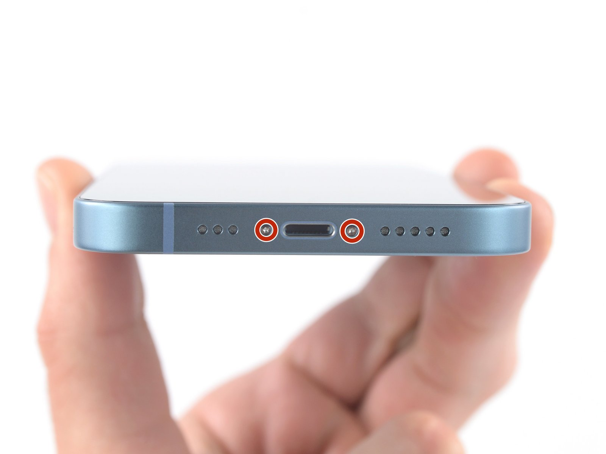
iPhone 14
Open the model-specific back glass repair tutorial with repair photos and safety notes.
View iPhone 14 guideModel-Specific Repair Library
Back glass work can involve heat, sharp glass, camera hardware, and wireless charging components. Use the model-specific guide and wear appropriate eye and hand protection.
17 model guides are currently available in this category.
Open the full site map
Open the model-specific back glass repair tutorial with repair photos and safety notes.
View iPhone 14 guideOpen the model-specific back glass repair tutorial with repair photos and safety notes.
View iPhone 14 plus guide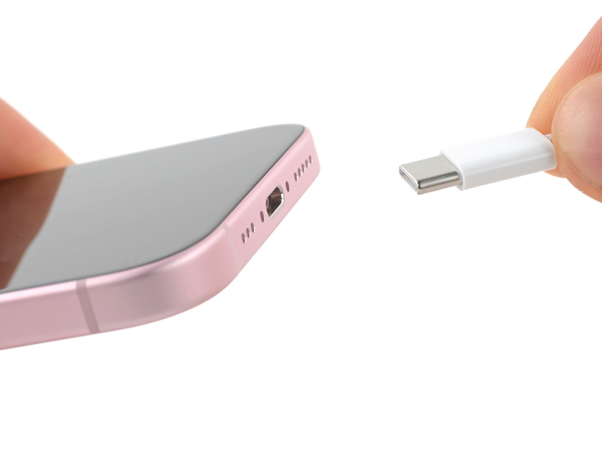
Open the model-specific back glass repair tutorial with repair photos and safety notes.
View iPhone 15 guideOpen the model-specific back glass repair tutorial with repair photos and safety notes.
View iPhone 15 plus guide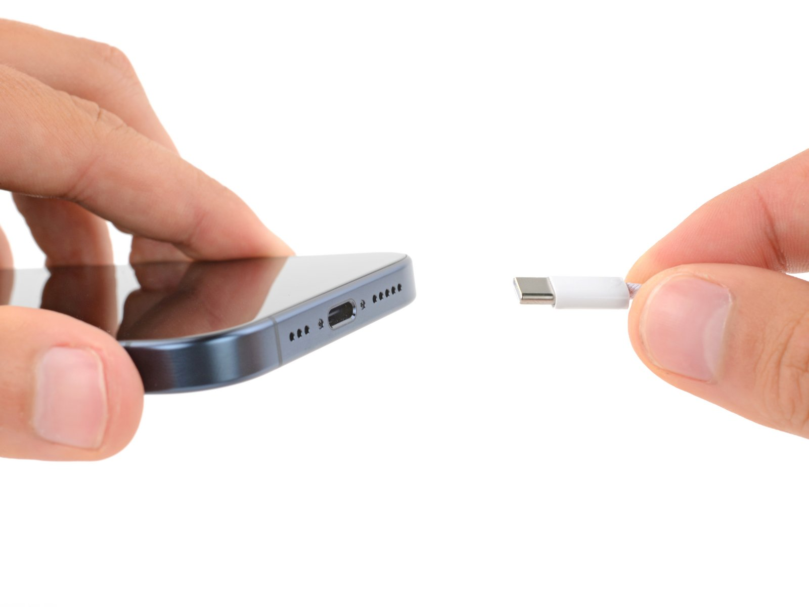
Open the model-specific back glass repair tutorial with repair photos and safety notes.
View iPhone 15 Pro guide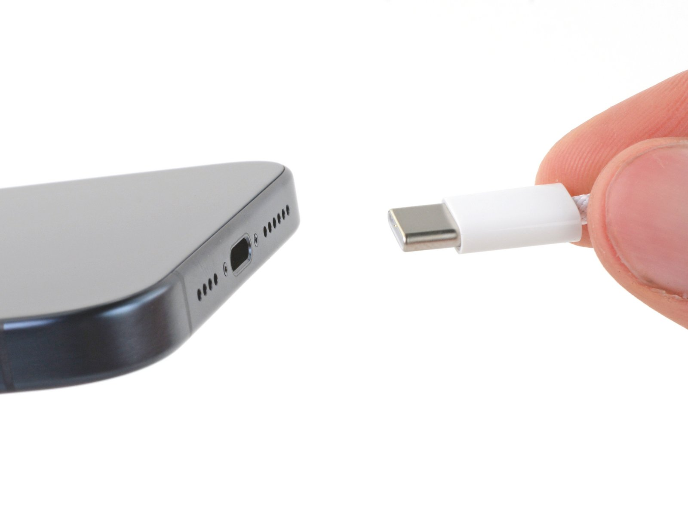
Open the model-specific back glass repair tutorial with repair photos and safety notes.
View iPhone 15 Pro Max guide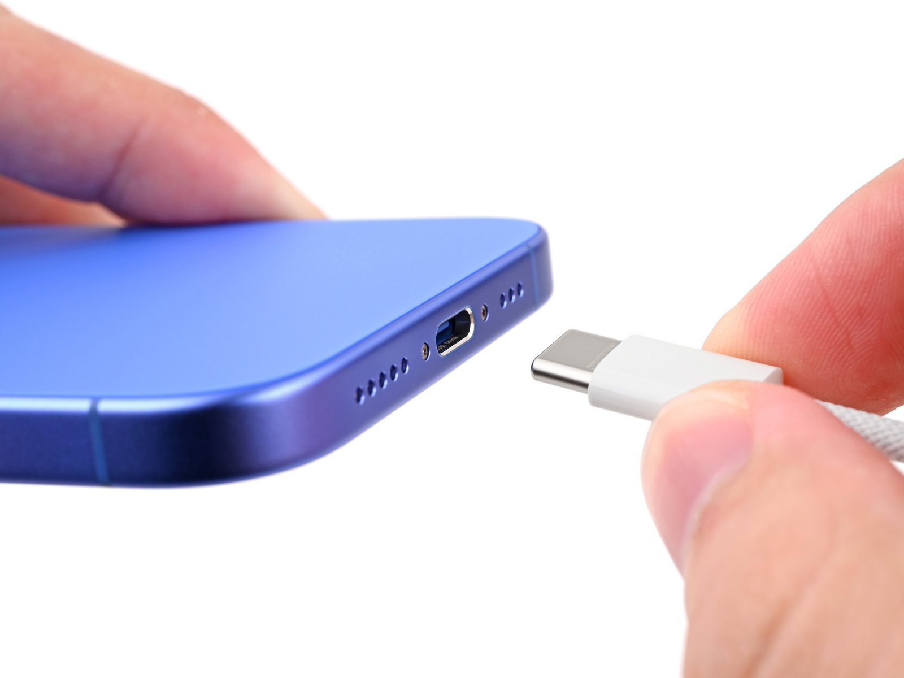
Open the model-specific back glass repair tutorial with repair photos and safety notes.
View iPhone 16 guide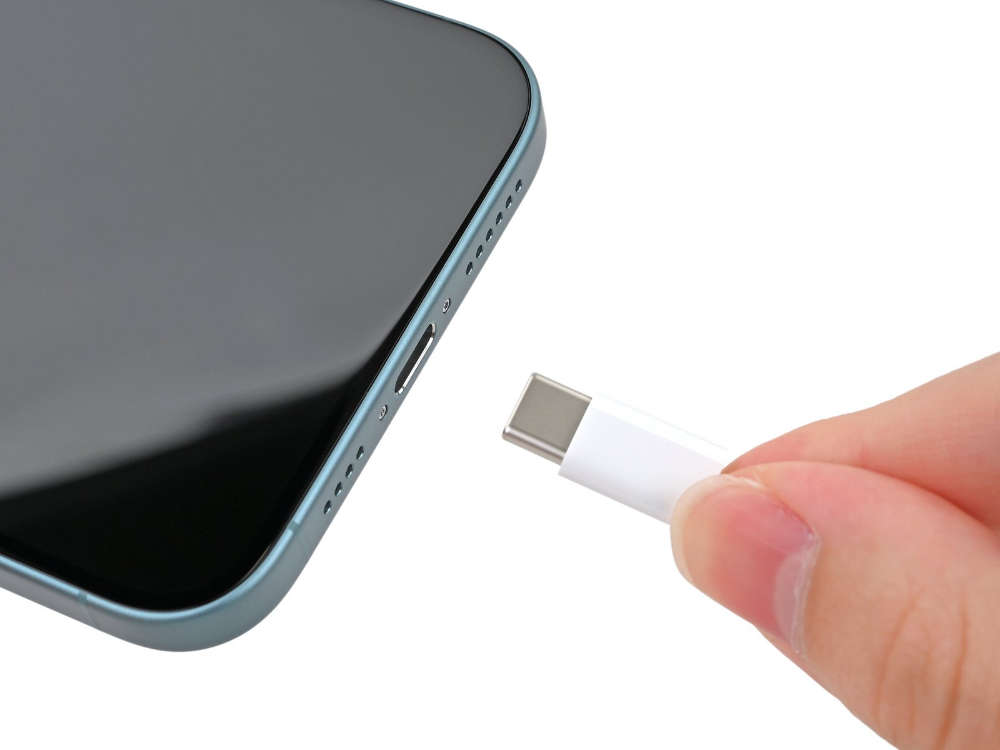
Open the model-specific back glass repair tutorial with repair photos and safety notes.
View iPhone 16 plus guide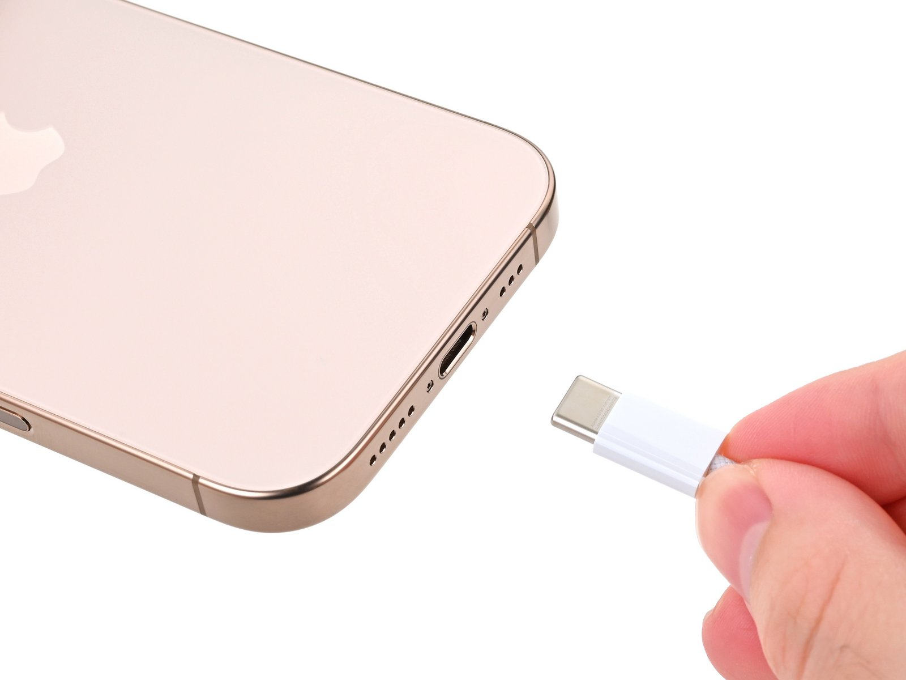
Open the model-specific back glass repair tutorial with repair photos and safety notes.
View iPhone 16 Pro guide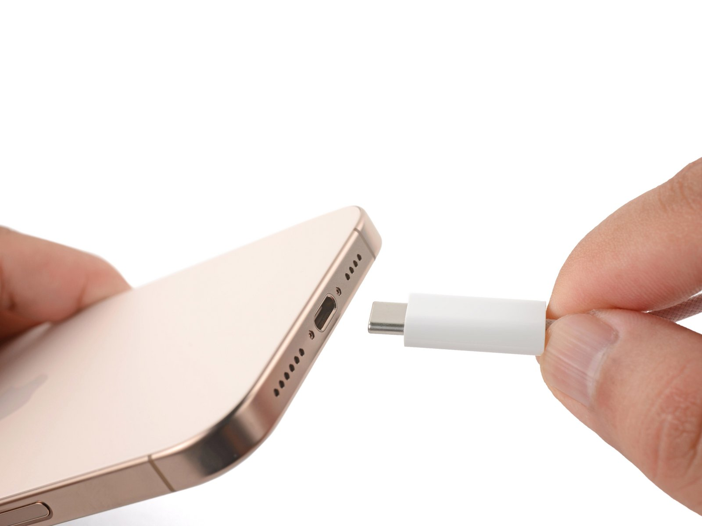
Open the model-specific back glass repair tutorial with repair photos and safety notes.
View iPhone 16 Pro Max guide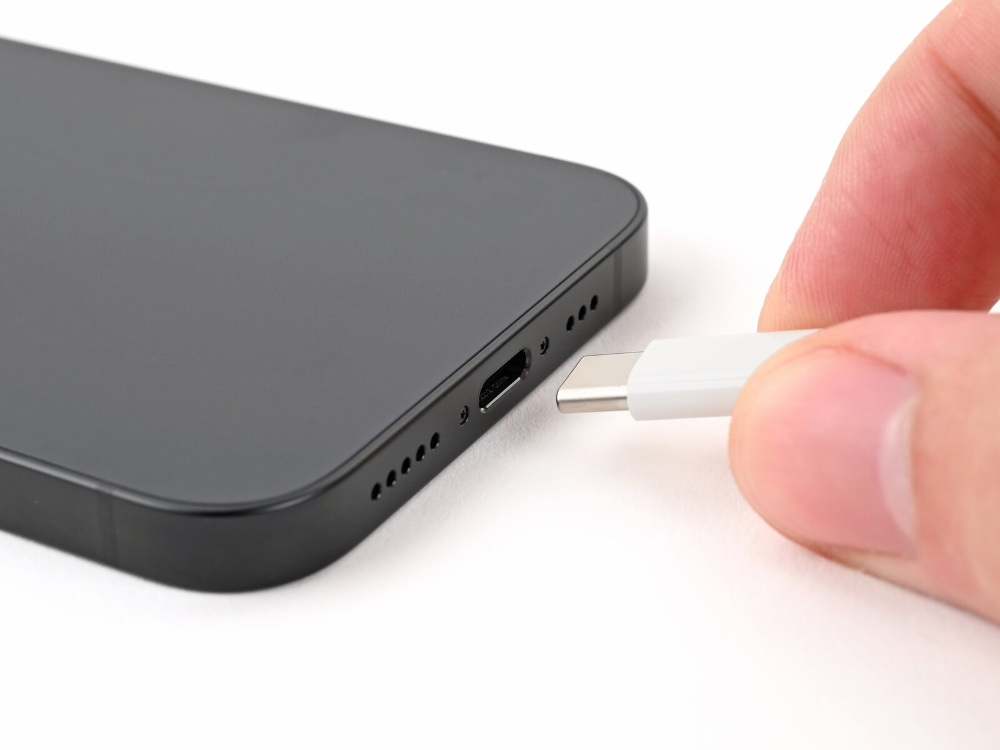
Open the model-specific back glass repair tutorial with repair photos and safety notes.
View iPhone 16e guideOpen the model-specific back glass repair tutorial with repair photos and safety notes.
View iPhone 17 guide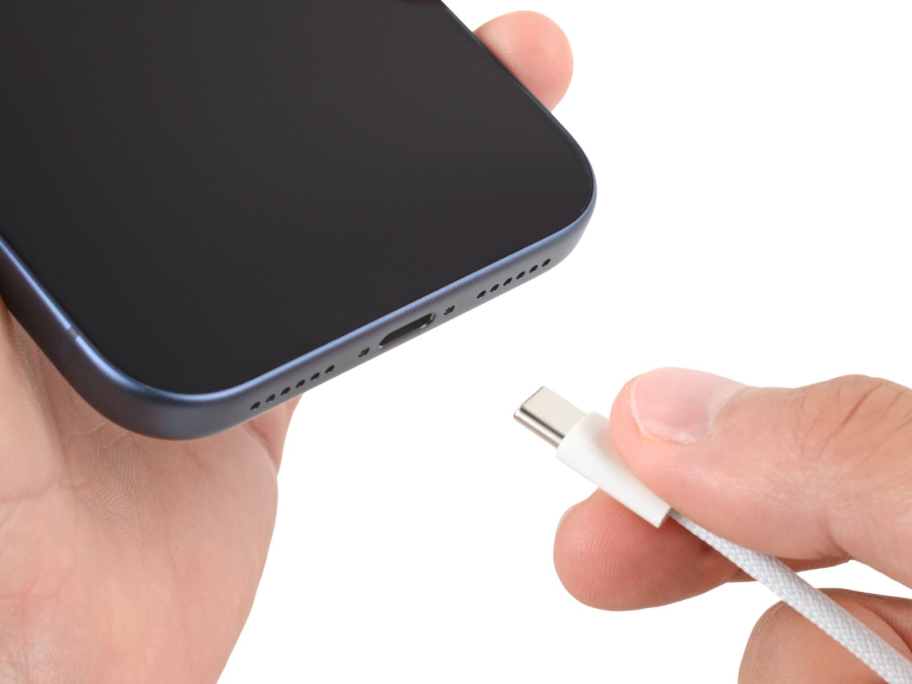
Open the model-specific back glass repair tutorial with repair photos and safety notes.
View iPhone 17 Pro guideOpen the model-specific back glass repair tutorial with repair photos and safety notes.
View iPhone 17 Pro Max guideOpen the model-specific back glass repair tutorial with repair photos and safety notes.
View iPhone 17e guide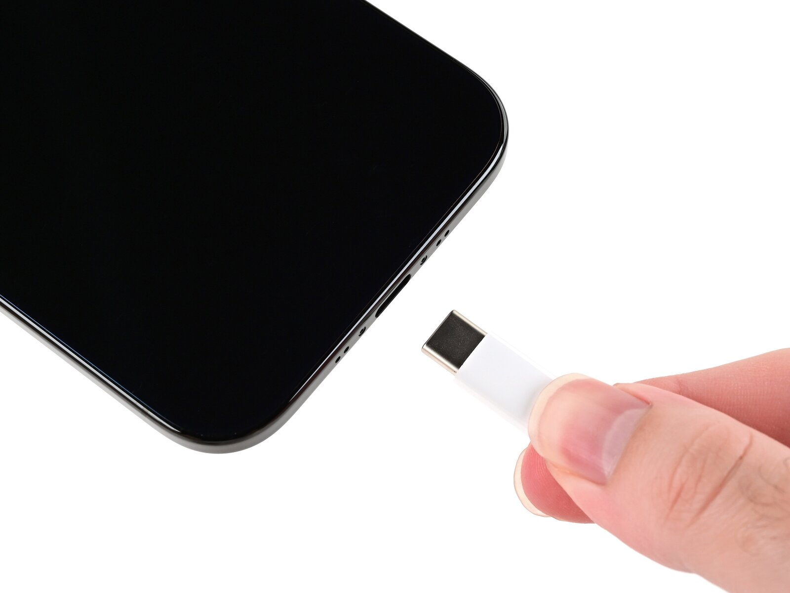
Open the model-specific back glass repair tutorial with repair photos and safety notes.
View iPhone Air guide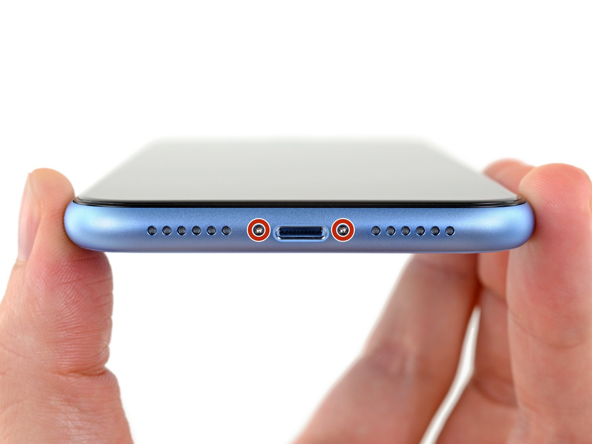
Open the model-specific back glass repair tutorial with repair photos and safety notes.
View iPhone XR guide